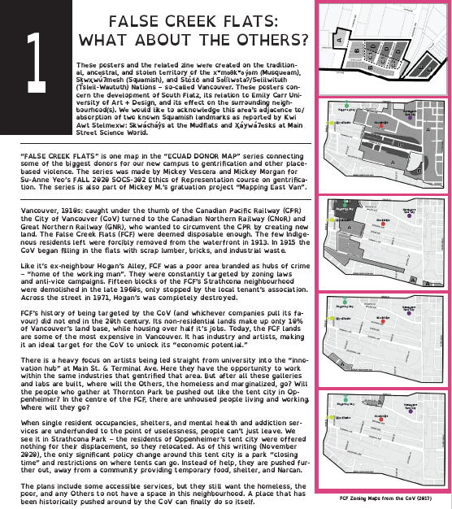

CONCRETE MARROW (2022)
'concrete marrow' is a series of works that imagines a future where destruction and redevelopment are so constant, animals have evolved to mimic and absorb parts of common machinery and construction equipment. each piece is based on anatomical diagrams of plants, insects, fish, birds, and mammals from across the Pacific Northwest. these close ups are then stretched, warped, and combined with mechanical parts and other elements the artist has seen throughout the cities of the Lower Mainland. the mixture of texture and material throughout the exhibition gives the works a chaotic and ever-changing energy. pieces are stacked haphazardly on top of each other, plinths, concrete, and scrap metal. a very internal examination of human and non-human lives suddenly becomes very alien. through this exhibition the artist examines our constantly developing environmental crises and the little-acknowledged mingling with and the effect of the city on strange, hopeful, and horrifying non-human-ness.
1 / 20

2 / 20

3 / 20

4 / 20

5 / 20

6 / 20

7 / 20

8 / 20

9 / 20

10 / 20

11 / 20

12 / 20

13 / 20

14 / 20

15 / 20

16 / 20

17 / 20

18 / 20

19 / 20

20 / 20

<-
->
IN HINDSIGHT OF THE FUTURE (2021)
'in hindsight of the future' is a series of five works (p-worm, e-worm, horseshoe, termite, and louse) that monumentalize oft-ignored nonhuman animals engaging in symbiotic relationships. the pieces are made from a mix of ceramics, scrap metal, plaster, tinfoil, and industrial foam. forms are abstracted from the digestive, reproductive, and nervous systems of insects and arthropods. Aesthetically, in hindsight of the future references classic sci-fi and retrofuturism. sci-fi media often tries to predict what will be important and normal for future societies. these choices reflect the dominant culture of the creators and their hopes and fears. for example, star trek’s united federation of planets communicates almost exclusively in american english, and shakespeare is so well known he can be quoted by crew members offhand – despite dying almost 600 years prior (what can you remember from six centuries ago?). 'in hindsight of the future' imagines what a sci-fi world could look like if our environment and the nonhuman animals we live with were deemed as important. Dedications to some of the many symbiotic relationships found in nature, and how they are capable of thriving alongside humanity.

ceramic, metal, plaster, plastic 51cm x 17cm x 115cm

ceramic, metal, plaster, plastic 51cm x 17cm x 115cm
louse…is a sea louse. it was inspired by the essay “unruly appetites” by marianna elisabeth lien. sea lice are a plague on farm salmon, and in sweden, the fish wrasse have been introduced to pens to eat the lice off the salmon. they also provide food for the salmon. this attempt to recreate the natural interactions of sea creatures in a pen inadvertently highlights the flaws of the farm system. the wrasse eat the sea lice, but oftentimes ignore them in favour of algae or when the population is too high. some even nibble on the salmon themselves. the pens have to be altered to accommodate the environmental needs of the wrasse, which include seaweed caverns to hide in. to emulate this, black garbage bags are cut into strips and hung off the sides of pens. the farms facilitate the desperate creation of simulacrae, expanding themselves into warped fantasies of the wild where interactions between species are driven by profit.

ceramic, metal, industrial foam, plaster 43cm x 14cm x 80cm

ceramic, metal, industrial foam, plaster 43cm x 14cm x 80cm
e-worm…is the digestive system of a worm. the eating habits and digestion of worms play a huge role in the microbial biodiversity of their habitats, not to mention the symbiotic bacteria within the worms’ digestive tracts. there are at least 15 reported genuses of bacteria inside worm intestines, divided into four categories: plant growth promoters, free-living nitrogen fixers, biocides, and phosphate solubilizers. worms are the engineers of their soil, and can either inhibit, stimulate, or neutralize the microbiomes around them.

ceramic, industrial foam, metal, aluminum foil 41cm x 26cm x 59cm

ceramic, industrial foam, metal, aluminum foil 41cm x 26cm x 59cm
horseshoe…is the nervous system of a horseshoe crab. this piece was inspired by the essay 'synchronies at risk' by peter funch. every spring on the United States east coast, horseshoe crabs crawl onto beaches and lay billions of eggs in the sand. the large number of eggs would guarantee food for red knot birds, who rely on those eggs to fuel them during their spring migration from south america to the canadian arctic. however, due to the decline in horseshoe crab populations from habitat loss and intensive harvesting, the red knot birds no longer have a stable food source to fuel their long journey. this is an example of symbiosis and species’ reliance on each other. Without the support of horseshoe crabs, red knot bird populations dwindle, and this echoes through all species affected by those birds.

ceramic, plaster, metal, aluminum foil 48cm x 48cm x 109cm

ceramic, plaster, metal, aluminum foil 48cm x 48cm x 109cm
termite…is the reproductive system of a queen termite. it was inspired by the essays 'holobiont by birth' by scott f. gilbert, and 'silent spring' by rachel carson. the reproductive system was chosen to reflect the effect of insecticides on reproductive functions. the termite itself was chosen because of the symbiotic relationship within it’s digestive system. mastotermes darwiniensis eats wood, but does not have a genome that allows it to digest wood. inside the termite gut is a symbiotic protist, mixotricha paradoxica, which digests the wood. m. paradoxica itself is a composite organism containing a protist and at least four other types of bacteria. the termite is a poster child for composite organisms, and the interconnectedness of species.

ceramic, metal, plaster 35cm x 28cm x 75cm

ceramic, metal, plaster 35cm x 28cm x 75cm
p-worm…is an abstraction of the reproductive system of a worm. p-worm is one of the most abstracted of the series, with the ovarian funnel and ovaries placed above the combination epidermis-testis sacs, and the spermatheca lining the sides. this piece was inspired by rachel carson’s essay 'silent spring'. the worm is a harbourer of symbiotic bacteria, however not in it's reproductive system. the reproductive system was chosen as a reflection of the documented effects of insecticides such as ddt on the reproductive systems of birds, one of the largest predators of insects such as worms. there is a line of destruction when one harms the perceived annoyances of the animal kingdom, one that results in the reproductive failure of multiple species.
GARDEN SCULPTURES (2020)
'garden sculptures' is a series of four sculptures inspired by post-humanist theory, rot, mutation, and religious imaginings of death. i wanted to show how a life can continue after death. that some death is not a true “death”, but both post-life and mid-life; creating new things while letting go of others. i explored this by creating ceramic sculptures that echo animals, mold, and fungi. their abstraction shows a blending of lives, creatures, and spirits.

ceramic 31cm x 15cm x 56cm

ceramic 31cm x 15cm x 56cm
bird/bunny

ceramic 45cm x 33cm x 57cm

ceramic 45cm x 33cm x 57cm
melted animal

ceramic 56cm x 19cm x 43cm

ceramic 56cm x 19cm x 43cm

ceramic 56cm x 19cm x 43cm
deer/slug

ceramic 58cm x 43cm x 34cm

ceramic 58cm x 43cm x 34cm

ceramic 58cm x 43cm x 34cm
horse
ECUAD DONOR MAP: MAPPING EAST VAN (2020) w/ MICKEY MORGAN
for the past few months i've been working with mickey morgan at mapping east van to create a set of posters and a zine that reflect on emily carr university and the surrounding land. in this project, we asked ourselves how this new campus was created, who/what paid for it, what our being-here serves, and what was here before.
the zine, which focuses on the emily carr campus and it's donors, was written and designed by mickey morgan. the poster, which focuses on the gentrification of the false creek flats and the development "south flatz", was written and designed by myself. both were created under an attribution-sharealike cc by-sa license.
both the posters and zine include a qr code to a resources/sources document, where you can find where we got our information and a list of organizations in so-called vancouver and the downtown eastside to support.
download links for the poster and zine:
